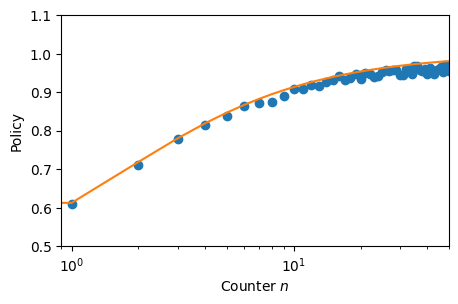

from rl_opts.analytics import pdf_powerlaw, pdf_discrete_sample, get_policy_from_dist
from tqdm import tqdm
import matplotlib.pyplot as plt
import numpy as npImitation learning
PS_imitation
PS_imitation (num_states:int, eta:float, gamma:float)
Constructs a PS agent with two actions (continue and rotate) that performs imitation learning in the search scenario. Instead of following a full trajectory of action-state tuples, the agent is directly given the reward state (the step length in this case). The agent updates all previous continue actions and the current rotate action.
| Type | Details | |
|---|---|---|
| num_states | int | Number of states |
| eta | float | Glow parameter of PS |
| gamma | float | Damping parameter of PS |
PS_imitation.update
PS_imitation.update (length:int, reward:int=1)
Updates the policy based on the imitation scheme (see paper for detailes)
NOTE: state is length-1 because counter starts in 0 (but in 0, agent has already performed a step of length 1 – from the previous action “rotate”).
| Type | Default | Details | |
|---|---|---|---|
| length | int | Step length rewarded | |
| reward | int | 1 | Value of the reward |
Example
We showcase how to imitate the policy based on a given step length distribution, an in particular of a Lévy distribution. For further examples, see the Tutorials section.
NUM_STATES = 100 # size of the state space
EPOCHS = 100 # number of epochs
NUM_STEPS = 1000 # number of learning steps per episode
steps = pdf_discrete_sample(pdf_func = pdf_powerlaw,
beta = 1,
L = np.arange(1, NUM_STATES),
num_samples = (EPOCHS, NUM_STEPS))
imitator = PS_imitation(num_states = NUM_STATES,
eta = int(1e-7),
gamma = 0)
for e in tqdm(range(EPOCHS)):
imitator.reset()
for s in steps[e]:
imitator.update(length = s)100%|██████████| 100/100 [00:01<00:00, 86.11it/s]policy_theory = get_policy_from_dist(n_max = NUM_STATES,
func = pdf_powerlaw,
beta = 1)
policy_imitat = imitator.h_matrix[0,:]/imitator.h_matrix.sum(0)_ , ax = plt.subplots(figsize = (5,3))
ax.plot(policy_imitat ,'o')
ax.plot(np.arange(1, NUM_STATES), policy_theory[1:])
plt.setp(ax,
xscale = 'log', xlim = (0.9, NUM_STATES/2), xlabel = r'Counter $n$',
ylim = (0.5, 1.1), ylabel = 'Policy');